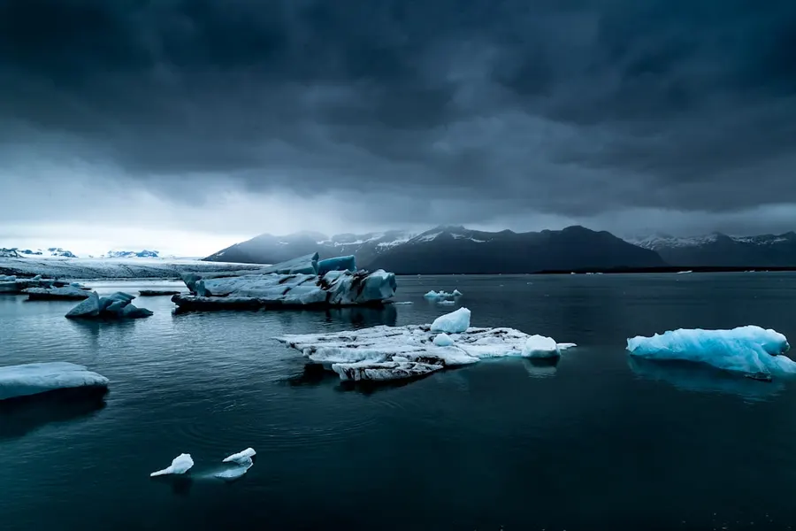
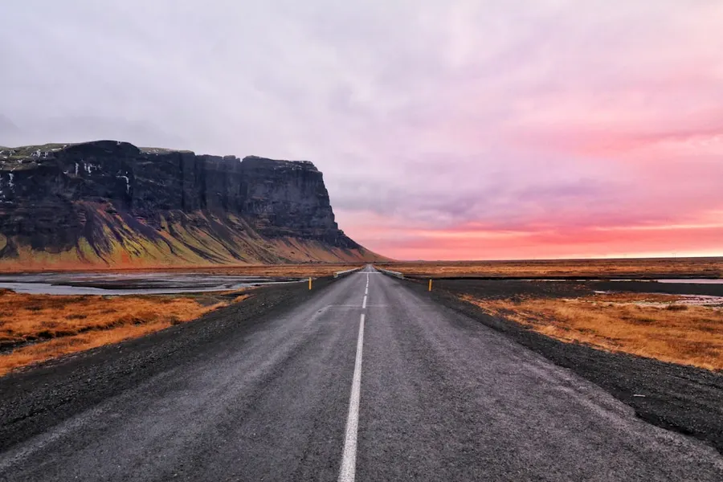
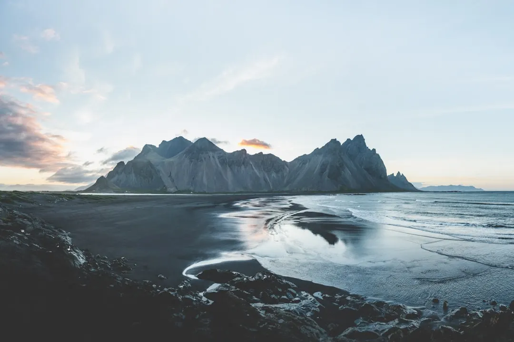

01 · Pourquoi y aller
Un monde à part
L'Islande est un pays qui offre une expérience unique à ceux qui le visitent. Les paysages y sont sans égal, avec des formations géologiques qui semblent surgir directement d'un monde fantastique. Les geysers, les glaciers, les cascades et les fjords créent un décor épique qui inspire et émerveille.
La faune et la flore islandaises sont également des attraits majeurs. Les baleines, les dauphins et les phoques peuvent être aperçus le long des côtes, tandis que les oiseaux de mer, comme les puffins et les guillemots, ajoutent une touche de couleur et de vie aux paysages côtiers.


02 · Quand partir
Le choix du mois de juin
Le mois de juin est idéal pour visiter l'Islande, car il offre un équilibre parfait entre les conditions météorologiques et la durée du jour. Les nuits sont presque inexistantes, permettant ainsi aux visiteurs de profiter pleinement de leurs journées pour explorer les régions les plus éloignées sans craindre l'obscurité.
Les températures en juin sont également relativement douces, avec des moyennes qui varient entre 10 et 15 degrés Celsius, rendant les conditions de voyage agréables. De plus, la période de juin coïncide avec le début de la saison touristique, ce qui signifie que la plupart des attractions et des routes sont ouvertes, mais les foules ne sont pas encore trop nombreuses.
03 · Les quartiers/zones
Découverte des régions
L'Islande peut être divisée en plusieurs régions, chacune offrant des expériences uniques. La région de la capitale, Reykjavik, est animée et culturelle, avec ses cafés, ses boutiques d'artisans et ses musées. La région de la côte sud est célèbre pour ses cascades, ses glaciers et ses plages de sable noir.
La région du nord, autour d'Akureyri, est connue pour ses paysages variés, alliant des fjords, des glaciers et des sources chaudes. Chacune de ces régions a son charme propre et offre une perspective différente sur la beauté et la diversité de l'Islande.

Photo : Norris Niman / Unsplash
04 · ì voir & à faire
Expériences inoubliables
L'Islande regorge d'activités et de sites à découvrir. Le parc national de Thingvellir, classé au patrimoine mondial de l'UNESCO, est un lieu historique et géologique unique, où l'on peut voir la faille entre les plaques tectoniques eurasienne et nord-américaine. Le lac de glace de Jökulsárlón est un spectacle naturel impressionnant, avec ses icebergs qui flottent sur l'eau.
Les sources chaudes, comme la Blue Lagoon, offrent une expérience de détente et de ressourcement dans un environnement naturel saisissant. Les randonnées et les safaris en 4x4 sont d'autres moyens de découvrir les paysages sauvages et inaccessibles de l'Islande.
05 · Gastronomie
Saveurs islandaises
La cuisine islandaise est simple, mais riche en saveurs et en traditions. Le poisson frais, comme le cabillaud et le saumon, est une base de l'alimentation locale, souvent servi grillé ou en tarte. Le skyr, un yaourt épais et crémeux, est un ingrédient typique, utilisé dans les desserts comme dans les sauces.
Les plats traditionnels, comme leHangikjöt (viande de mouton fumée) et leHákarl (fermenté de requin), sont des expériences culinaires uniques, même si elles peuvent surprendre les palais étrangers. Les restaurants islandais offrent souvent une vue imprenable sur les paysages environnants, ajoutant ainsi une dimension agréable à l'expérience gastronomique.
06 · Où dormir
Hébergements variés
L'Islande propose une grande variété d'hébergements pour tous les goûts et les budgets. Les hôtels de Reykjavik offrent un confort urbain et une proximité avec les attractions culturelles, tandis que les guesthouses et les auberges de jeunesse dans les régions rurales permettent de se connecter avec la population locale et de vivre une expérience plus authentique.
Les campings et les hébergements en plein air sont également populaires, permettant aux visiteurs de se rapprocher de la nature et de profiter des paysages sous les étoiles (ou le soleil de minuit, en juin). Il est important de réserver les hébergements à l'avance, surtout pendant la haute saison.
07 · Budget & bons plans
Conseils pour voyager sans se ruiner
L'Islande est considérée comme l'un des pays les plus chers du monde, mais avec quelques conseils, il est possible de voyager sans dépasser son budget. Acheter des produits locaux et préparer ses propres repas peut aider à réduire les coûts. Les supermarchés comme Bónus et Krónan offrent des options abordables pour les provisions.
Les cartes de réduction, comme la Reykjavik City Card, peuvent donner accès à des attractions et des transports en commun à prix réduits. Il est également recommandé de louer une voiture pour explorer les régions reculées, mais de comparer les prix et les conditions pour trouver les meilleures offres.
08 · Se déplacer
Modes de transport
La façon la plus pratique de se déplacer en Islande, surtout pour explorer les régions rurales, est de louer une voiture 4x4. Cela permet de parcourir les routes F (routes de montagne) et d'accéder à des endroits reculés. Les bus sont une autre option, avec des lignes qui relient les principales villes et attractions touristiques.
ì Reykjavik, les transports en commun sont efficaces et faciles à utiliser, avec des bus qui couvrent la plupart des quartiers. Il est également possible de se déplacer à pied ou à vélo dans la ville, profitant ainsi de l'atmosphère locale et des paysages urbains.
09 · Conseils pratiques
Préparation et sécurité
Avant de partir pour l'Islande, il est important de vérifier les conditions météorologiques et de se préparer en conséquence. Des vêtements chauds et imperméables sont essentiels, même en juin, car le temps peut changer rapidement. Il est également recommandé d'apporter des bottes solides et des gants pour les activités de plein air.
La sécurité est généralement bonne en Islande, mais il est important de prendre des précautions pour protéger son équipement et ses biens personnels, surtout dans les zones touristiques fréquentées. Il est conseillé de suivre les instructions des guides et des panneaux d'information pour éviter les accidents, surtout dans les zones naturelles sensibles.
Le conseil Odyssa
Utilisez Odyssa pour planifier votre itinéraire en Islande, en organisant vos journées, en réservant vos hébergements et en suivant vos dépenses, pour profiter pleinement de votre voyage dans ce pays exceptionnel.
Planifiez votre séjour à Islande jour par jour et gardez tout hors ligne avec Odyssa � gratuitement.
Télécharger Odyssa